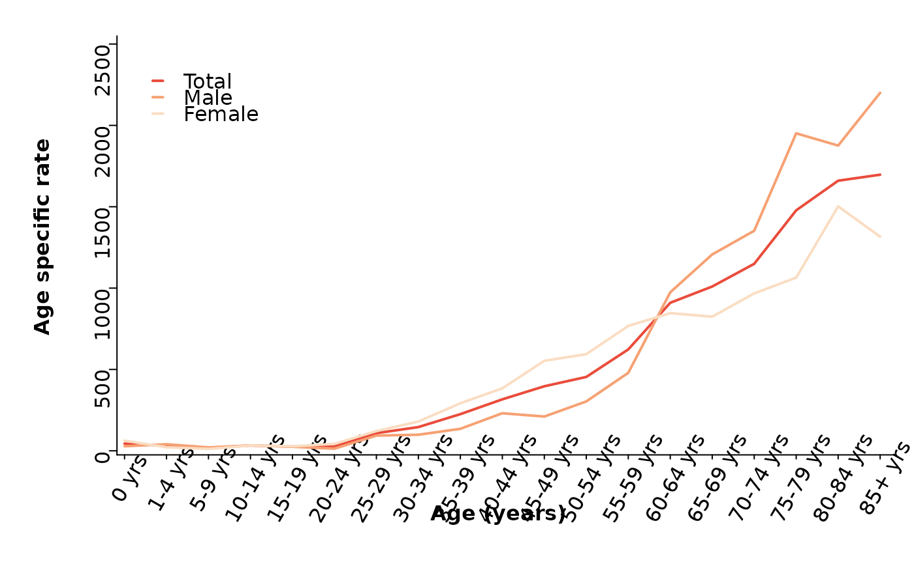

This function draws a line chart from a data frame, optionally grouped by a categorical variable. It uses base R graphics and supports custom axis ticks, labels, and styles.
draw_linechart(
data,
x,
y,
group = NULL,
facet = NULL,
grid = c(1, 1),
x_axis = NULL,
y_axis = NULL,
x_label = NULL,
y_label = NULL,
axis_title = c("Age (years)", "Age specific rate"),
cols = NULL,
palette = "Peach",
line_type = "l",
lwd = 2,
adj = 0.02,
srt = 60,
main = NULL,
sub = NULL,
mar = c(1, 0, 1, 0),
add = TRUE,
offset = 0.01,
...
)A data frame containing the variables to plot.
Bare column names for the x and y axis variables.
Optional bare column name used to group and color lines.
Optional bare column name used for faceting. If provided, the data will be split by this variable and plotted in a multi-panel layout.
A vector of length 2 specifying number of rows and columns for facets. Default is c(1, 1).
Optional numeric vector specifying x-axis tick locations.
Optional numeric vector specifying y-axis tick locations.
Optional labels for x and y axis ticks. If NULL,
defaults are used.
Character vector of length 2 giving the axis titles: c("x axis label", "y axis label").
Character vector of line colors. Defaults to c("darkgreen", "darkred", "gray").
Character, palette name indicate group of colors.
1-character string giving the type of plot desired. The following values are possible, for details, see plot: "p" for points, "l" for lines, "b" for both points and lines, "c" for empty points joined by lines, "o" for overplotted points and lines, "s" and "S" for stair steps and "h" for histogram-like vertical lines. Finally, "n" does not produce any points or lines.
Line width. Default is 2.
Adjustment for axis text placement. Default is 0.02.
String rotation angle for x-axis labels. Default is 90 degrees.
Main title and subtitle of the plot.
Margin of the sub plot.
Logical. If TRUE, restores original graphics parameters after
plotting.
Axis offset used for spacing ticks. Default is 0.01.
Additional arguments (currently unused).
data("canregs")
fbsw <- count_canreg(canregs[[1]], label_tail="yrs")
agerate <- create_age_rate(fbsw, year, sex)
agerate <- add_labels(agerate, lang = "en")
draw_linechart(agerate, agegrp, rate, sex)

agerate <- create_age_rate(fbsw, year, sex, cancer)
agerate <- add_labels(agerate, lang = "en")
agerate <- dplyr::filter(agerate, cancer %in% as.character(c(103:106)))
draw_linechart(agerate, agegrp, rate, sex, cancer, grid = c(2, 2))